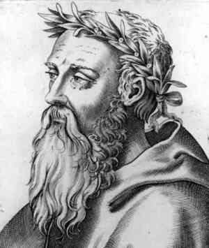
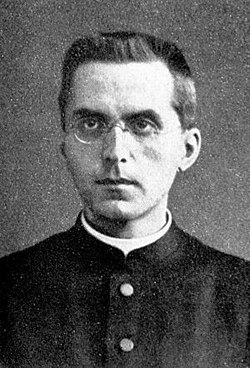
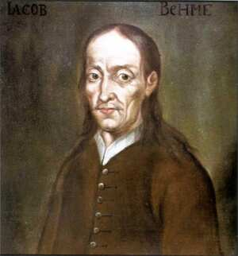

Exploring the Analogia Entis Principle in Electroacoustic Music
(with Intelligible Sound) (2024,v1)
A draft essay by Gewenxin Yu, extended into a research project at MAN Network
Rationale
Analogy
The being of creatures is categorized into three groups in relation to God: univocal, equivocal, and analogical (analogia entis) 1. The analogia entis functions as a mediating term that exists between univocal and equivocal, signifying similarity-in-difference. In the context of Ancient Greek philosophy, analogy (αναλογια) refers to the comparison of two proportions or relations, and it was first emerged in ancient Greek mathematics.

According to Heraclitus\' famous idea of the Continuum, all things move and nothing remains still, and he likens the universe to the current of a river, saying that you cannot step twice into the same stream 2 [@Plato1921]. Heraclitus believed that there is no true being or permanence, only becoming. Even though in his day Heraclitus seemed to not go that far like Schelling 3, both of them affirm the generative nature of the empirical world, that is, becoming.
By the time of Plato, he endeavored to reconcile the opposing ideas of being articulated by Heraclitus and Parmenides 4. Consequently, Plato conceptualized the empirical world as existing in a dynamic interplay between being and non-being, as well as between the Form and the formless, for him the reality of the one is akin to a moving image of the other 5 [@Przywara2014-intro, p. 33-35]. In contrast, the Aristotelian sense of analogy emphasizes the unity of order by reference to a primary instance, so the platonic analogy stressed more on the participation.
The theologians\' doctrine of analogia entis pertains to a relationship of likeness between God and creatures 6. This analogy encompasses the concepts of imitation and participation [@sep-analogy-medieval], which is an amalgamation of two themes proposed by Aristotle and Plato [@Montagnes2006].

According to the modern theologian Erich Przywara, the original platonic sense of analogy lacks a genuine transcendence and any interval based upon the difference between the finite and the infinite, in other words, it fails to adequately distinguish between immanence and transcendence , as well as between image and archetype 7. The difference is ultimately one of intensity or degree, but not a distinction of essence [@Przywara2014-intro, p. 34-35]. A musical description of the platonic analogy has provided by Penido, \"The accomplished artist knows how to make a cord vibrate in such a way as to draw from it a piercing note, which little by little fades away and finally disappears. The intensity varies, but it is always the same note\" [@Anderson1949]. However, Przywara\'s idea of analogia entis is closely connected to the musical notion of oscillation (Schwingend), which denotes a vibrant that swinging and swaying back and forth. 8 The principle of analogia entis fundamentally represents a primordial dynamic in which analogy manifests as a rhythm, akin to the Pythagorean idea that the cosmos resonates with a resonant rhythm. [@Przywara2014, p. 314]
Seven Stages

The mystic-philosopher Jakob Boehme\'s worldview has significantly influenced numerous philosophers within the tradition of German idealism, including Hegel, Schelling, and Goethe, as well as romantic poets such as Novalis and William Blake. Boehme\'s architectonic system of the Seven Qualities of God 9 is thoroughly articulated in his magnum opus, Aurora, where he presents a Christian mystical cosmology [@Boehme2010; @Schneider1954],
- Seed. (Wrath, Nothingness, formless Chaos, Abyss, male, contraction.)
- Duality. (Love, Mirror, Sophia, world of creation, female, expansion.)
- Rotation. (Kreuzrad, return to first matter.)
- Stillness. (Transitional stage, cessation of movement.)
- Union. (Male and female joined. The seed is reborn.)
- Intelligible Sound.
- Seed. (Tincture, Entelechia (ἐντελέχεια). The cycle begins afresh.)
The first stage, the Seed, indicates the dark world of the Father. In the subsequent stage of Duality, we encounter the luminous world of the Holy Spirit. The sixth stage, Intelligible Sound, is where the powers associated with the fifth stage become distinct and audible. This stage is characterized by a profound harmony of intelligible sounds and tones, where the audible corresponds with the visible [@martensen2018jacob, p. 73].
Unlike other art forms, music is unique in that it lacks a real prototype in nature. Composers cannot simply imitate existing natural materials in a way and present it as a work. Instead, the essence of music is mediated through the individual human spirit represented by the composer from the outset [@Steiner1983]. Through an ineffable process, composers merge musical techniques -- such as music theory and their experiences with instruments -- directly with their individual spirits, and their souls, creating a model of their inner Selfs that conceals its technical aspects from the listener.
Research Questions
In the context of electroacoustic composition,
- How can we find a plausible solution to enable sensible musical events to meaningfully participate in the Form (in our case, Boehme\'s system)?
- How does the analogia entis principle facilitate the transformation of the invisible Spirit-visible Nature into the audible instances? In other words, how can our interpretation of the \"image of the divine\" in the electroacoustic composition, which simultaneously embodies the will of the composer and nature, be conveyed in such a way that it becomes an instance of the audible Spirit?
- What methods can composers employ to make their divine experiences and thoughts more accessible to listeners through their music, particularly when utilizing data sonification techniques? How can spatialisation technology (such as Ambisonics) be effectively integrated into the production process of a data-driven electroacoustic composition?
Methodology
We will consciously apply the principle of analogia entis at each stage of the composition, from the selection of dataset, the sound objects to the processing methods used for grouped sound masses, to the timberal preference. We will strive to minimize the arbitrary mappings (personalization) in our choice of methods, while employing a system similar to Jakob Boehme\'s world-generating framework as the singular form for the entire work.
Philosophical Foundations
In examining the intricate interplay between Music, Spirit, and the Nature, we uncover a profound connection that reveals how artistic expression serves as a conduit for the Spirit, reflecting the divine and manifesting the invisible through the visible or audible. This is the metaphysical system that we want to employ:
- The Spirit - The analogia entis of Godness-Divine
- Nature - Invisible Spirit - Visible \"image of the divine\" 10
- Music, Poetry and Art - Visible or audible Spirit
- The creative subjects (artists) - Spiritual agents as invisible segments of \"image of the divine\"11
The most precious moment of the beginning of a composition occurs when the Seed elevates the composer to an elevated state of awareness, where embodying the \"image of the divine\". The musical work is the product of the spirit recognizing this \"image of the divine\" through its own nature, subsequently processed by the composer\'s technical skills. In this way, the \"image of the divine\" and the composer\'s spirit find each other, establishing a connection between the composer and the nature, as the visible aspect of the \"image of the divine\" is almost synonymous with the Nature. The invisible aspect of the \"image of the divine\" is the true Self that the composer discovers within, a Self that has already encountered its entelechia, marking the renewal of the cycle. 12
Sound Technologies
The term sonification was originally coined by Rabenhorst et al. in 1990, and it referred to as a complementary aural counterpart to data visualization [@Rabenhorst1990ComplementaryVA]. Kramer et al. defined sonification as [@kramer1999]
\"Sonification is the transformation of data relations into perceived relations in an acoustic signal for the purposes of facilitating communication or interpretation.\"
Up to 2009, Worrall presents an all-encompassing definition for sonification [@worrall2009],
\"Data sonification is the acoustic representation of data for relational interpretation by listeners, for the purpose of increasing their knowledge of the source from which the data was acquired.\"
The data sonification result of a selected natural object -- such as one specific type of rock, Igneous, transforms into metamorphic rock under changing temperatures13; or even the distribution of minerals in an area14 -- will serve as the product of the sixth stage, Intelligible Sound, while the music correspondence of the former five stages will be accomplished through the combination of traditional electroacoustic composition methods and spatialisation techniques. This requires a great deal of imagination, so certain musical elements, such as timbre or rhythm, can serve as dominant musical elements that continuously change and \"rotating\", revealing the fact that the first five stages are essentially defined solely by energy and motion as the only variables.
Although the selected dataset may provide us with a solid source to intuitively constructing the present status of an object, the historical formation processes of natural objects are factually invisible and, to some extent, even irretrievable, we can -- if in the case of Petrology -- potentially reconstruct the earlier formation stages based on archaeological evidence and compose music accordingly.
Expected Outcomes
We aim to develop a compisition method that dynamically navigates between the two extremes established by Heraclitus and Parmenides, striving to render these opposing movements as dialectical as possible. We utilize the Przywara-Pythagorean principle of analogia entis within the context of electroacoustic music, where we could make the invisible Spirit ---Nature--- audible. In this framework, the composer acts as a spiritual agent, enhancing the existence of intelligent sound and allowing the very intensity of the world\'s generative process to manifest within electroacoustic compositions. In other words, our objective is to find a balance that best aligns with the inherent nature of electroacoustic composition, enabling meaningful and sensible musical events to participate in the Form. This participation simultaneously evokes the formless, thereby facilitating the instantiation of the Forms in nature, while also transcending it.
We envision a new potencial compositional approach that is faithful to the Nature and more attuned to the modern Spirit. Musical creation needs to be integrated into the overall flow of spiritual becoming. The listeners will be compelled to contemplate how the primordial World, possessing ancient time, comes into being, and to evoke anamnesis (ἀνάμνησις)---the memory of the ancient world, which is more directly connected to reflections on entelechia (ἐντελέχεια) and logos (λόγος) [@Keyser1996].
This compositional approach represents a profound contemplation of Nature as a genuine existence. The final composition will serve as a means, a prototype to stimulate the intuition and intelligent of the listeners as reason-dreamers [@Kant1983]. And also provide an analogia entis instance of the image of divine Nature in the form of audible Spirit.
The concrete academic outcome will consist of a series of electroacoustic compositions, accompanied by computer programs or softwares developed, as well as a paper exploring how the entire composition process and results meet the metaphysical envisions and addressing the proposed research questions.
References
Download bibtex here: analogia-entis.bib
-
Compared to other two predicates, the idea of analogia entis posits that being is neither identical to God (univocal) nor entirely distinct from God (equivocal). [@Przywara2014-intro, p. 43] This classification also reflects a logical division of predicates, encompassing univocal, equivocal, and analogous predicates, with the latter forming an intermediate class. [@Montagnes2006, p. 14] ↩
-
Plato, Cratylus 402a. Accessed via Perseus Digital Library, version 4.0. Available online: http://data.perseus.org/citations/urn:cts:greekLit:tlg0059.tlg005.perseus-eng1:402a ↩
-
Heraclitus\'s concept of \"continuum\" emphasizes the \"becoming\" process inherent in the Nature, while Schelling extends this idea to the relationship between Nature and Spirit. He articulates the idea that \"nature should be Mind (Spirit) made visible, Mind (Spirit) the invisible Nature. \". [See @harris1988,p. 42]. ↩
-
Parmenides asserts that being alone is real, positing that reality is a unity in the strictest sense and that any form of change is impossible. The empirical world, as perceived by the senses, is illusory and unreal. [See @Guthrie1962] This perspective is further discussed in the Parmenides entry [@sep-parmenides] in the Stanford Encyclopedia of Philosophy, which can be accessed online at: https://plato.stanford.edu/entries/parmenides/. ↩
-
Plato, Timaeus, 31a-d. Accessed via Perseus Digital Library, version 4.0. Available online: http://data.perseus.org/citations/urn:cts:greekLit:tlg0059.tlg031.perseus-grc1:31a ↩
-
This term has been a common topic among Jesuits since the time of Suarez\'s Disputationes Metaphysicae and can be traced even further back to the Dominicans, particularly Cajetan and John of St. Thomas [@betz2025]. Available online: https://churchlifejournal.nd.edu/articles/erich-przywara-in-memoriam/. According to Thomas Aquinas, \"The analogical applies to different beings each of which has its own nature and a distinct definition, but which have in common the fact that they are all in a relation to the one among them to which the common meaning primarily belongs.\" [See @Montagnes2006, p. 26] ↩
-
In the context of Panentheism, \"transcendence\" refers to God\'s externality to the world. \"Immanence\", on the other hand, is God\'s presence and activity within the world. [@sep-panentheism] In Schelling\'s philosophy, the counterpart to transcendental philosophy is his Naturphilosophie). He considers transcendental philosophy, Naturphilosophie, and identity philosophy as \"correlative aspects\" of a unified systematic whole. [See @Schelling2004] ↩
-
Understanding Przywara\'s analogia entis is not simply a matter of seeing the similar and the dissimilar of a musical score, but of hearing with a musical ear the proper stress of its rhythm. [@Przywara2014-intro, p. 86] ↩
-
This can also be named as seven fundamental Forces, or Natural Forms or Properties. [See @martensen2018jacob] ↩
-
For Schelling, Nature is the living matter that has been formed and spiritualized, a process that serves as a visible analogue of the Spirit (mind). \"In the dead object everything is at rest ---there is in it no conflict, but eternal equilibrium. Where physical forces divide, living matter is gradually formed; in this struggle of divided forces the living continues, and for that reason alone we regard it as a visible analogue of the mind. But in the mental being there is an original conflict of opposed activities, and from this conflict there first proceeds ---(a creation out of nothing)---a real world.\" [Quoted from @harris1988, p. 177] ↩
-
The German romantic poet Friedrich Hoelderlin posits the idea that \"Was ist der Menschen Leben? ein Bild der Gottheit\", where \"Menschen\" here refers to the creative subjects -- artists. ↩
-
This process is analogous to that of the making of poetry, where the poet does not merely create poetry; rather, the Spirit reveals itself through the poet, elevating the poet\'s Self. In this sense, poetry enters the poet\'s being and merges with the poet\'s spirit in a mysterious way. The \"image of the divine\" thus integrates into the poet, and its evolution can be seen as a process of unification between nature and the creative subject. Similarly, the poet will employ their linguistic skills to articulate this ineffable Spirit, resulting in the birth of each poem. ↩
-
\"Metamorphic rocks form when heat, pressure, or chemically reactive fluids cause changes in preexisting rocks (protoliths) with no melting involved.\" [See @perkins2022], Accessed via Open Petrology. Available online: https://opengeology.org/petrology/9-intro-to-metamorphism/ ↩
-
Given that the compositional approach discussed is intrinsically conceptual and formal, the selection of materials -- natural objects -- becomes largely irrelevant. Notable composition examples can be found in two of Xenakis\'s compositions, Bohor (1962) and La légende d\'Eer (1977). ↩